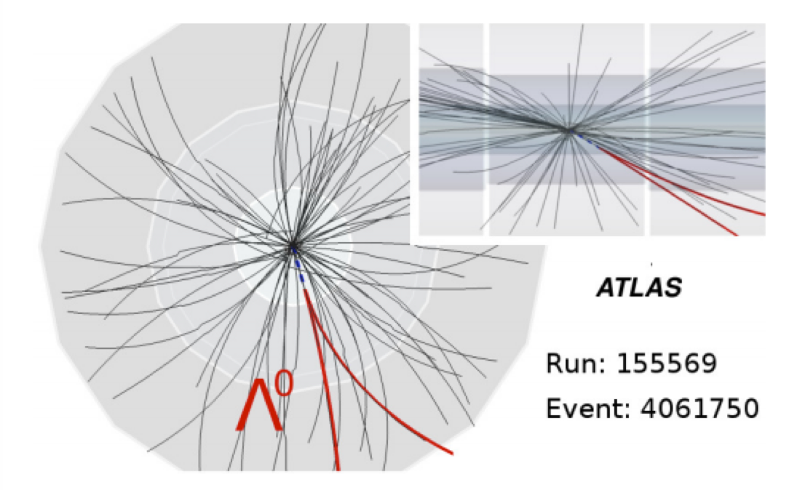

Measurement of correlation between inclusively produced $\Lambda\bar{\Lambda}, \Lambda\Lambda, \bar{\Lambda}\bar{\Lambda}$ hyperon pairs at $\sqrt{s}=7$ TeV in the LHC ATLAS experiment
Baryon (antibaryon) production is among the most poorly understood aspect of the fragmentation mechanism, having experimental measurements and constraints is crucial to better understanding of the physics involved in these processes. The physics process of interest here is $pp \rightarrow \Lambda\bar{\Lambda}/\Lambda\Lambda/\bar{\Lambda}\bar{\Lambda} + X$ and $\Lambda \rightarrow p\pi^−$ ($\bar{\Lambda} \rightarrow \bar{p}\pi^+$) which is reconstructed in the inner tracker of the ATLAS detector as a displaced vertex with a pair of oppositely charged tracks (Figure 1).
The main physics goals of this research are as follow:
The first goal is to study $s\bar{s}$ quark-antiquark pair production through the spin correlation between $\Lambda\bar{\Lambda}$ pairs.
To search for evidence that the presumed $s\bar{s}$ pairs which produce the $\Lambda$ and $\bar{\Lambda}$ are produced at the same space-time point. By using the decay channel $\Lambda \rightarrow p\pi^−$ ($\bar{\Lambda} \rightarrow p^−\pi^+$) in which the angular distribution of the daughter products defines the parent polarization, we look for correlation between the final state $p$ and $\bar{p}$. If indeed the $s$ and/or $\bar{s}$ pairs are produced in the same quantum process and then hadronize into $\Lambda$ and/or $\bar{\Lambda}$ and the spin information of $s$ and/or $\bar{s}$ is preserved during the hadronization with $ud$ and/or $\bar{u}\bar{d}$ singlet in the naive quark model, one would expect the spins of the resulting $\Lambda$ and $\bar{\Lambda}$ to be correlated and, consequently, the angles of production of the final state protons to be correlated as well.
The second goal is to test the prediction of the jet fragmentation and hadronization models such as the Lund string model.
To measure the dynamical correlations in the rapidity and momentum phase space through a correlation function $C(p_1, p_2)$ defined as the ratio between a two-particle density function $\rho_2(p_1 ,p_2)$ and the product of two single-particle density functions $\rho_1(p_1)$ and $\rho_1(p_2)$. We look for possible enhancement or suppression of pair production of $\Lambda$ and/or $\bar{\Lambda}$ hyperons when compared to the case where the two hyperons are independently produced. Dynamical correlations are expected for the hyperon pairs at small Q-value as a consequence of the baryon and anti-baryon production mechanism in the Lund string model. $\Lambda\bar{\Lambda}$ pairs are expected to possess positive correlation while $\Lambda\Lambda$ and $\bar{\Lambda}\bar{\Lambda}$ pairs are expected to be anti-correlated. The length scale of the correlation is expected to be similar to that between other baryon/anti-baryon pairs with similar rest mass, such as the case between protons and/or anti-protons, which is at around $Q \sim 1.5$ GeV ($R_{pp} \sim 0.15$ fm).
The third goal is to probe the Fermi-Dirac (FD) correlation between identical fermions.
To study the FD correlation arising from the antisymmetric nature of the wavefunction of two identical fermions. Also known as the Pauli exclusion principle, identical fermions cannot share the same set of quantum numbers when they are in vicinity of each other, which leads to the suppression of S = 1 state for the $\Lambda\Lambda$ or $\bar{\Lambda}\bar{\Lambda}$ system. The FD correlation is therefore expected to affect the hyperon pairs that fall within the small Q-value region only.

Figure 1: The event display of a $\Lambda^0$ candidate in the inner tracker in the $xy$ and $zR$ projections. The associated tracks are shown in black, the tracks used in the event reconstruction are highlighted as red and the refitted track is shown as a blue dash line. (Scheirich, 2013)
Figure 2: Hyperon invariant mass specturm of $\Lambda$ fitted with a double asymmetric Gaussian signal function and a linear polynomial background function using the RooFit package. The fit results are expressed in terms of the signal fraction $f_{sig} = N_{sig}/(N_{sig} + N_{bkg})$, the position of mass peak $m_{\Lambda}$ and the mass resolution $\sigma_m$ as shown in the figures.
Past correlation measurements include hyperon pairs selected from the hadronic $Z^0$ decays in $e^+e^-$ annihilation at LEP (OPAL, ALPEH and DELPHI), $Au + Au$ collisions at 200 GeV at STAR in RHIC, $\Sigma^-A$ interactions at 600 GeV at SELEX (E781), $Pb$ ions collision at 158 A GeV at NA49 and $nC$ collision at 51 GeV at EXCHARM. The results were not very conclusive due to limited statistics and controversies in the interpretation of results (for LEP). It is therefore very tempting to examine if the same physics can be reproduced and how the string fragmentation model perform in terms of baryon/antibaryon production phenomenology at a much higher enregy at the LHC using proton-proton beams.
Qualification Work for the ATLAS Authorship
MDT Configuration Database (DB) This is the service work for my qualification.
I was responsible for maintaining the configuration DB of the monitored drift tubes (MDT) (Figure 3) and developing new softwares to provide more functionalities to users. I also helped to develop the DB schema (Figure 4) to accommodate the new configuration for the high-luminosity runs in the future.
MDT Configuration DB Graphical User Interface (GUI) I wrote functions for the MDT GUI which was developed by me and another PhD student to facilitate and visualize the retrieval and modification of detector parameters in the configuration DB.
Figure 3: Schematics of the muon spectrometer of the ATLAS detector.
Searches for Heavy Quark States at ATLAS 2016-12-09, Proceedings of XII International Conference on Beauty, Charm, and Hyperons in Hadronic Interactions (BEACH 2016)
Work Project Report by Joshua McKenney 2014-08-06, CERN (The report of a REU student working under my advisor and me on the removal of $\Lambda$ hyperon decayed from $\Sigma^*$ baryon as background in the spin correlation analysis)